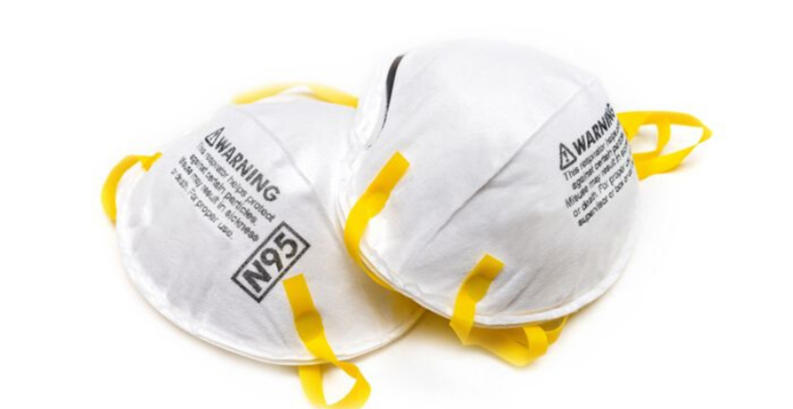
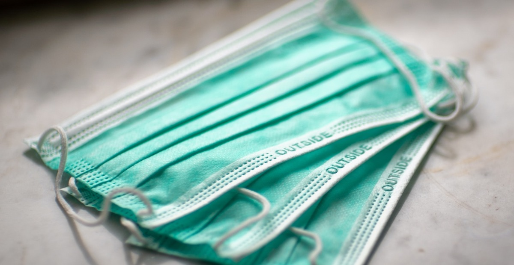
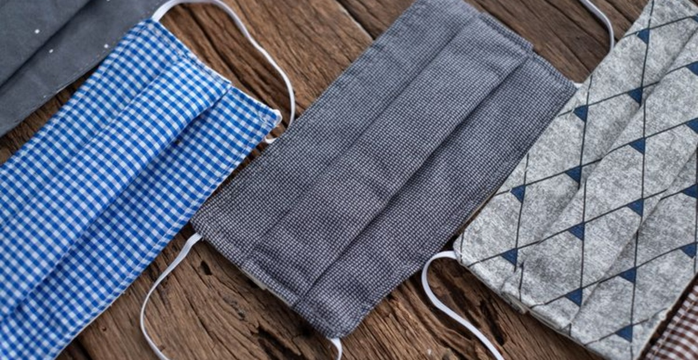

Rekomendasi masker untuk menurunkan resiko penularan COVID-19
Kementerian Kesehatan menganjurkan 3 jenis masker untuk menurunkan resiko penularan COVID-19, yaitu
- Masker N95

Masker ini efektif untuk menurunkan resiko penularan COVID-19. Masker N95 lebih mahal ketimbang masker yang lain dikarenakan tidak hanya mampu menghalau percikan air liur saja, tapi juga partikel kecil di udara yang mungkin mengandung virus. Masker ini bisa memfiltrasi partikel berukuran 0,1 mikron sampai 95 persen. Selain itu, tidak ada kebocoran dari masker ini bila dipakai dengan baik.
- Masker Bedah

Surgical mask atau masker bedah adalah jenis masker yang mudah & sering dijumpai ketika tenaga medis sedang bertugas.Masker ini efektif untuk mencegah penyebaran virus Corona karena memiliki lapisan yang mampu menghalau percikan air liur. Masker ini bisa memfiltrasi 30-95 persen. Namun, tetap ada kebocoran, khususnya dari samping, karena tidak sempurna menutupi wajah.
- Masker Kain

Masker kain disarankan kepada semua orang ketika sedang melakukan aktivitas diluar rumah. Masker ini tetap bisa menghalau sebagian percikan air liur yang keluar saat berbicara, menghela napas, batuk dan bersin. Masker kain hanya mampu memfiltrasi 10-60 persen. Selain itu, masker kain juga memiliki tingkat kebocoran yang tinggi.